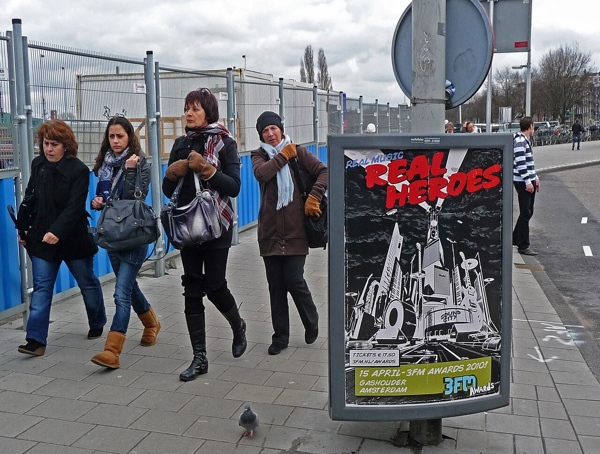

Traveling alone can make you more available to chance encounters, but it does not make you responsible for being outgoing every hour. A better goal is to create a few natural openings and choose the ones that feel comfortable.
1. Start where the activity does the talking
Try a small-group walking tour, a cooking class, a language exchange, a group hike, or a community event around something you already like. Shared focus removes pressure to invent conversation from nothing. Check the organizer’s details, group size, route, and meeting point before booking.
2. Ask a question that belongs to the place
“Which dish would you order again?” or “Is this trail open after the rain?” is easier than a forced icebreaker. A local recommendation can become a short conversation; if the other person answers briefly or turns away, let it end naturally.

3. Let a place become familiar
Visit the same market, café, class, or public event more than once. Familiarity creates easy follow-up: you can ask how someone’s week went or pick up a conversation you started last time. Keep the plan light—a coffee after the class is enough.
4. Make the invitation easy to decline
Offer a clear, short option: “I’m heading to the food market around four; would you like to join for a bit?” A specific plan is easier to answer than “We should hang out sometime.” Treat a no or a non-answer as complete information, not a negotiation.
5. Keep your own plan and boundaries
Meet in a public place, tell someone you trust where you are going, and keep your own way back. Do not share your room number or full itinerary with someone you just met. You can leave whenever you want; a friendly start does not obligate you to continue.
A few apps that can help you find the setting
Use listings to find an activity, then check the organizer, cost, and location yourself. App availability and paid features vary by destination.
Meetup
Browse local interest groups and events, then review the host and event details.
Eventbrite
Find public events and activities; confirm the organizer’s terms and final cost.
Hostelworld
Compare hostels and check whether each property lists community activities.
Google Maps
Check public meeting points and routes so you can make your own way there and back.
Check before you go
Listings can change. Confirm event details directly with the organizer and follow local safety guidance.
Remember the places and people along the way.
Met gives you a way to keep a note of an encounter and connect when you both choose to reveal. Participation depends on the places available in the app.